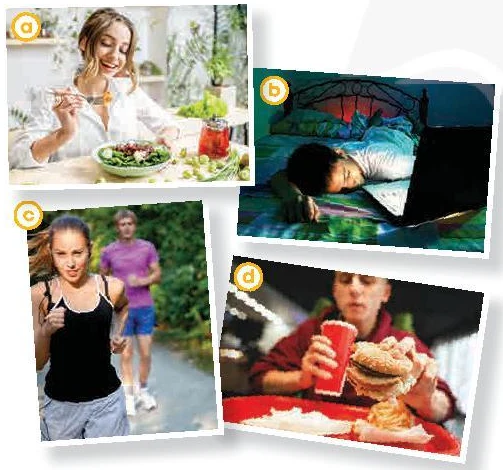

How to live a long
and healthy life
Lesson 3 — Reading
1Five stops in 45 minutes
- 🗂️
Sort it!
Healthy or unhealthy?
5 min - 📷
Before reading
Photos + new words
9 min - 📖
Read
Tasks 2–4
20 min - 💬
Discuss
Is the advice useful?
8 min - ✅
Wrap-up
Exit ticket + homework
3 min
Warm-up
Sort it! Healthy or unhealthy?
5 minutesHealthy or unhealthy? Sort the cards!
- eat fruits and vegetables
- stay up late
- drink enough water
- eat late in the evening
- have a balanced diet
- eat too much sodium
- get regular exercise
- too much screen time
- avoid tobacco and drugs
- overuse painkillers
- get enough good sleep
- eat fast food
How did your team do?
✓ Healthy
eat fruits and vegetables
drink enough water
have a balanced diet
get regular exercise
avoid tobacco and drugs
get enough good sleep
✗ Unhealthy
stay up late
eat late in the evening
eat too much sodium
have too much screen time
overuse painkillers
eat fast food
Before reading
Photos and new words
9 minutesWhich photos show healthy habits?

a healthy — vegetables
b unhealthy — laptop on in bed
c healthy — exercise
d unhealthy — fast food
I think photo … shows a healthy / unhealthy habit because …
Words from the article
- life expectancy (n) /ˈlaɪf ɪkˌspek.tən.si/ tuổi thọ
- label (n) /ˈleɪ.bəl/ nhãn (thông tin trên sản phẩm)
Words from the article
- ingredient (n) /ɪnˈɡriː.di.ənt/ nguyên liệu, thành phần
- nutrient (n) /ˈnjuː.tri.ənt/ chất dinh dưỡng
Words from the article
- give off (phr v) /ɡɪv ɒf/ phát ra, toả ra
- repetitive (adj) /rɪˈpet.ə.tɪv/ lặp đi lặp lại
While reading
How to live a long and healthy life · page 11
20 minutesHow to live a long and healthy life
Life expectancy has generally increased over the past few decades, and some people enjoy a longer and healthier life than others. One possible explanation is that they have healthy lifestyle habits. So how can you develop these habits?
A. __________
Start by looking at food labels, paying attention to ingredients and nutrients, such as vitamins and minerals. Avoid having food with too much salt or sugar, such as fast food. Furthermore, add more fresh fruits and vegetables to your diet, and remember to eat a big breakfast and a small dinner.
B. __________
If you have not been very active, start exercising slowly, but regularly. To begin with, choose the type of exercise that is suitable for you. Then, start slowly, for example, by doing exercise for only 5 to 10 minutes a day. When your body is ready for more exercise, you can work out longer. Finally, exercise regularly to always keep your body fit and your mind happy.
C. __________
A good night’s sleep is very important. Before you go to bed, avoid having coffee or energy drinks. Exercise can help you have a better sleep, but avoid exercising right before bedtime. Never use your mobile phone or laptop in bed …
C. __________
… and turn off all your electronic devices at least 30 minutes before you go to bed. Their screens give off blue light that can prevent you from sleeping well. Finally, if you still can’t fall asleep, do something repetitive or listen to some soft music to relax before trying to sleep again.
Find the words in the article
1 ↓ (Section A, noun) the things from which something is made ingredients
2 → (Intro, noun phrase) the number of years a person is likely to live life expectancy
3 → (Section A, noun) things to keep a living thing alive and help it grow nutrients
4 → (Section B, phrasal verb) do physical exercise work out
Two headings are extra
1. Eat better · 2. Exercise regularly · 3. Go to bed earlier · 4. Develop healthy habits · 5. Sleep well
Section A → 1. Eat better
Section B → 2. Exercise regularly
Section C → 5. Sleep well
Extra headings? 3 and 4
No more than TWO words for each gap
A · Eat better
study food labels · avoid too much salt or sugar · add fresh fruits and vegetables · eat a big breakfast
B · Exercise
choose suitable exercise → start slowly → work out longer → exercise regularly
C · Sleep
before bed: avoid coffee or energy drinks · turn off electronic devices
✋ True · 🤚 False · 🧍 Not given
right hand = True · left hand = False · stand up = Not given
1. We should avoid food with too much fat. Not given
2. We should work out hard from the start. False
3. Blue light from electronic devices makes it hard to sleep. True
4. Turn off your devices and go to bed immediately. False — at least 30 minutes before
5. If you can’t sleep, try counting sheep. Not given
After reading
Discuss with a partner
8 minutesWhat do you think?
- 💡
Question 1
Do you find the advice in the article useful? Why / Why not?
- 🏃
Question 2
Have you tried following any of the suggestions? What happened?
I find … useful because … · I have tried … · I would like to …
Three quick things before you leave
- 1️⃣
Word
One new word from today and its meaning.
- 2️⃣
Advice
One useful piece of advice from the article.
- 3️⃣
Action
One healthy habit you will try this week.
Homework
1. Write a short paragraph about ways to live healthily and increase life expectancy.
2. Do the Reading exercises in the workbook.
3. Get ready for Lesson 4 — Speaking.